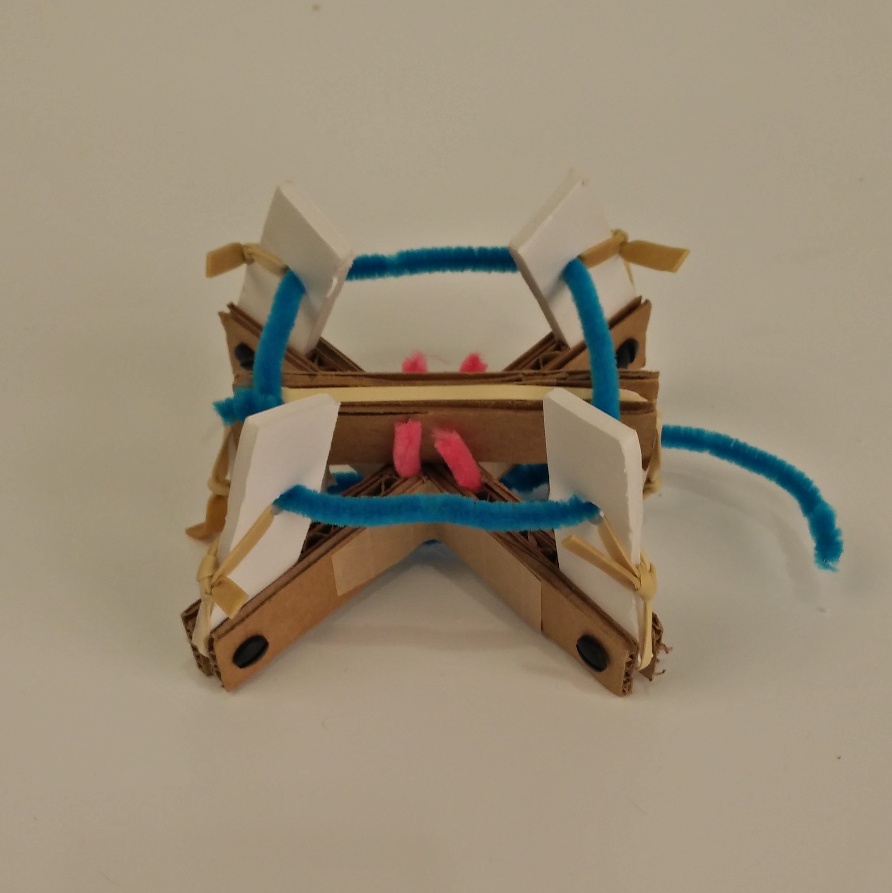
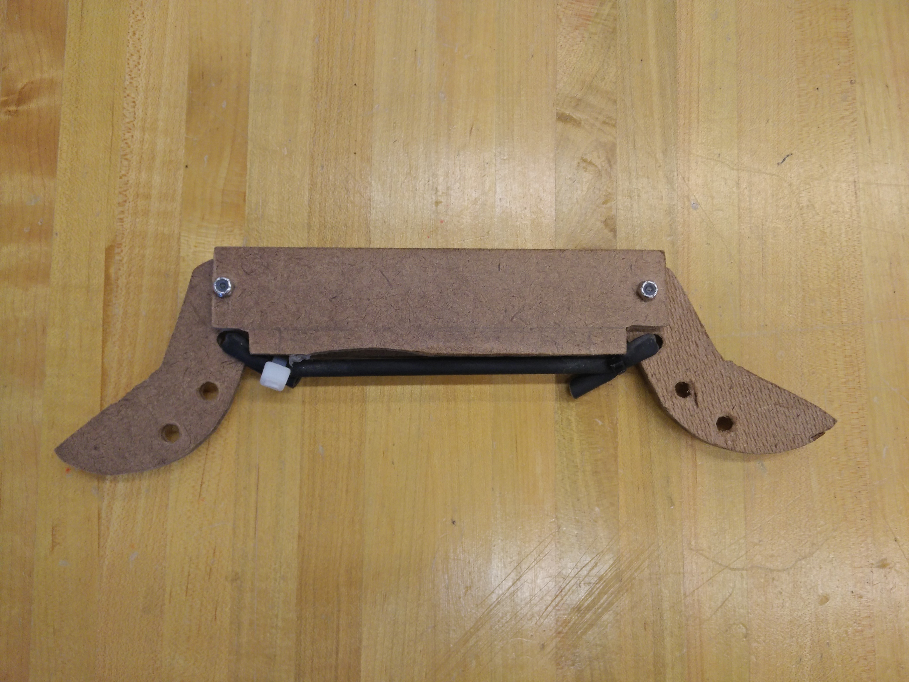
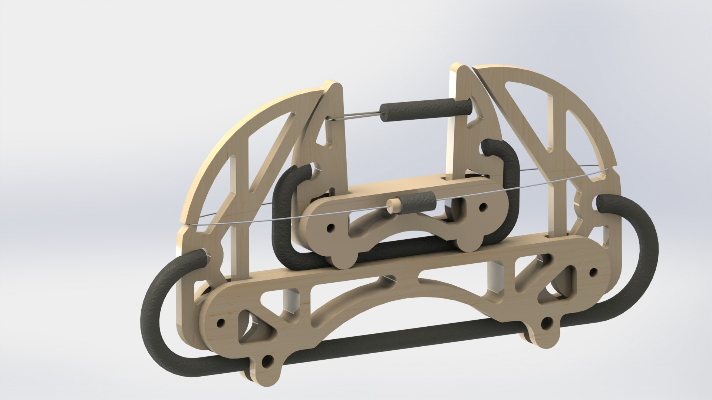

Inspiration
This hopper is very loosely inspired by the sea cucumber. The hopper can eject a smaller part of itself as part of a "self defense" mechanism. When the first, larger hopper, is in the air, the smaller hopper shortly jumps off of the top of the first hopper. The reason why I designed the hopper to do this is because it would be mechanically complex, and thus quite interesting. Additionally, being able to see the hopper visibly bounce back up, mid-air would be really cool.
Design Restrictions
This was a class project, so there were a bunch of design constraints placed on us. Most notably:
- Limited materials, both in quantity and type. Among the allowed materials was fishing line, hardboard, latex tubing, dowels, springs, screws, balloons, a capacitor, rocket igniters, electrical wire and piano wire
- A minimum weight of 75 grams
- A trigger that activates at least half a second after human interaction
- A maximum stored energy of three Joules
- Hoppers needed to remain in one piece after the jump
Design
The one design restraint that really impedes my design goal of making a double jumping hopper is the fact that the hopper needs to say in one piece. In order to get around this, I tethered the smaller hopper to the bigger hopper. While this severely limits the behavior of the jump, it was nessecary to make sure my hopper followed the rules.
Both of the hoppers have very similar mechanisms. They both use latex tubing as stored energy to actuate legs that suddenly raise the center of mass of the hopper. Additionally, they both use friction triggers to release stored energy. The real interesting part of the hopper comes in the interaction between the big hopper and the small hopper. In order to guarantee that the small hopper doesn't actuate while the big one is still on the ground, the legs of the big hopper are used to restrain the legs of the small hopper. That way, it is only after the first hopper jumps that any load is placed on the trigger for the second hopper. The friction trigger for the second hopper was finely tuned to guarantee that the small hopper jumps while in the air. Both hoppers only have two legs as to reduce mechanical complexity. In order to execute a successful double jump, the first hopper has to jump straight up: if it has any pitch or roll rotation, the second hopper will not jump straight up. Reducing the number of legs helps to ensure that both hoppers stay upright in the air.
Process
This project started with an idea and some basic sketches. From there, I developed it into a rough sketch model as a sort of a spacial proof of concept. From there, I refined the deisgn and transfered it into CAD. Benchtop models, or prototypes, were constructed following dimensions in the CAD, allowing for further refinement. The CAD model and physical model co-evolved to produce the hopper that I ended the project with.
  Performance
This project was pretty successful. Both triggers were able to go off at the right times pretty reliably. And while there was some rotation of the big hopper while in the air, it wasn't enough to completely throw off the trajectory of the small hopper. I believe that there are two places that the hopper could be improved. Firstly, the smaller hopper could have been more securely fastened to the big hopper to more efficiently convert the stored potential energy from the latex to height. Secondly, I could have made both hoppers jump higher, or at least for longer, in order to accentuate the double jump. Slow motion footage is needed to really appreciate the hopper's double jump.